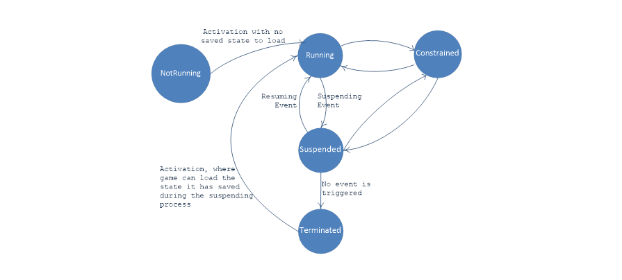

PLM
Xbox One applications do not behave like normal executables. Much like a mobile application they have a life cycle that is ultimately controlled by the Operating System. Your application has responsibilities and these have a direct impact on how you need to design your game. Failure to take the PLM into account when designing your game may prove challenging as you approach certification.
From the Microsoft documentation this life cycle looks something as follows:

They key states are:
- Constrained - Microsoft is using some of your games resources as either a SystemUI is on screen or you are running in a window.
- Suspended - You application has stopped executing but is entirely memory resident and can pick up exactly from where it left off at a moments notice.
- Terminated / NotRunning - Your application has been evicted from memory and will be "rebooted" the next time you launch.
There are several places where your application must participate in this life cycle:
- When going Constrained, your application must be cognizant of the fact you are losing some resources and ensure it can still function reasonably well. You may want to mute audio, pause the game, or something else when this happens. Be aware that your game can become constrained for numerous reasons, you may not want to pause the game or mute audio in all cases. Online games for instance may find pausing the game can be used for cheating while some games may find they still want to play audio when a SystemUI is on the screen.
- When Suspending, your application must save enough state to attempt to return the user back to where they left off on the next boot of your application. You must do this quite fast.
- When Resuming, your application may have lost network connectivity or the active set of users may have changed, you must take this into account.
- When booting, your application must determine if it needs to load a previously saved state and attempt to return the user to his last suspend experience.
Application.Quit
Before diving in, many developers instinctively look for Application.Quit when designing their main menu. In many cases the developers do not understand that Xbox One attempts to create an experience that feels like it is always up, always running and games launch instantaneously. Quitting an application prematurely in this world may work against this effort. Even if an application were to call Application.Quit, applications will always go through a suspend/terminate phase as they shut down.
The XboxOnePLM Object
All PLM related functionality is available in the XboxOnePLM object. This includes events for tracking state changes through the PLM life cycle and several methods for querying information about the state of the system.
Constrained
When your application changes state to and from Constrained mode, you can be notified using the following event:
XboxOnePLM.OnResourceAvailabilityChangedEvent += ResourceAvailabilityChangedEvent;
void ResourceAvailabilityChangedEvent(bool amConstrained)
{
// Perhaps we mute audio? What else?
AudioListener.volume = amConstrained ? 0.0f : 1.0f;
}
Suspending
Your application MUST have a Suspend handler, you cannot ship without one. Before being suspended your application will be notified again through the XboxOnePLM object:
XboxOnePLM.OnSuspendingEvent += Suspending;
void Suspending()
{
// Save game state here, or do it across multiple frame if required.
// +!+!+!+!+!+!+!+!+!+!+!+!+!+!+!+!+!+!+!+!+!+!+!+!+!+!+!+!
// YOU MUST CALL THIS BEFORE WE TIME OUT.
// This tells Unity that you are done all work
// and it is now safe to suspend the application
//
// You have less than 1 second to call this method
// +!+!+!+!+!+!+!+!+!+!+!+!+!+!+!+!+!+!+!+!+!+!+!+!+!+!+!+!
XboxOnePLM.AmReadyToSuspendNow();
}
There are a couple of key things to take into account here:
- If you do not call AmReadyToSuspendNow before 1 second is up you will fail certification. Unity places a large warning in your applications log file if this is tripped for some reason.
- Your application MUST save game state fast. In general you have to use ConnectedStorage to do this within the required time limit without fail.
- You should avoid anything that requires a round trip over the network.
- You should expect all network operations to fail on Resume.
- You should expect your users to potentially change on Resume.
- You will not be notified if your application is terminated after this.
Resume
Resuming can happen at any point in the future. A minute, an hour, a month, a year? The application has effectively been idle in memory and is expected to pick up where it left off. Your application is notified about resume operations through the XboxOnePLM object:
XboxOnePLM.OnResumingEvent += Resuming;
void Resuming(double <span)
{
// Reinitialize network connections, etc etc.
// Unity passes you back the wallclock time <span that you were suspended for
// You should tailor your actions to the amount of time that they application
// was suspended. IE: do you bring the user back into furious action when they have
// been suspended for a week? Probably not, perhaps you bring them back to a pause
// screen or something like it.
TimeSpan timeSuspended = TimeSpan.FromSeconds(<span);
}
Activation
Your title will receive a Launch ActivatedEventArgs when it is first launched. This is how you determine if your title was launched from a Terminated or a NotRunning state. If you were launched from a Terminated state then you must search to see if you should be loading previous save data from the previous Suspend operation and attempting to seamlessly return the user to a state close to where they left off. You check the state by checking the PreviousExecutionState property.
Protocol activation on the other hand will trigger in numerous situations. A title's Activation event will trigger every time protocol activation occurs (regardless of whether the title is already running). The ProtocolActivatedEventArgs provides data when an app is activated because it is the app associated with a URI scheme name.
XboxOnePLM.OnActivationEvent += Activation;
void Activation(ActivatedEventArgs args)
{
if (args.Kind == XboxOneActivationKind.Protocol)
{
ProtocolActivatedEventArgs pargs = (ProtocolActivatedEventArgs)args;
Debug.Log(" Uri: [" + pargs.URI.ToString() + "]");
}
if (args.Kind == XboxOneActivationKind.Launch)
{
LaunchActivatedEventArgs largs = (LaunchActivatedEventArgs)args;
OnScreenLog.Add(" TileId: [" + largs.TileId + "]");
OnScreenLog.Add(" Args: [" + largs.Arguments+ "]");
}
}
The Xbox One build of Unity ships with a PLM sample package that attempts to demonstrate some of the PLM related systems built into the engine.